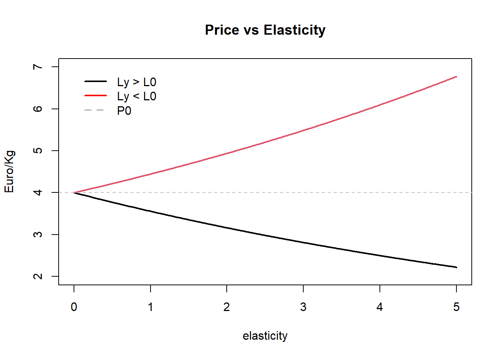

Bio-Economic simulation using FLBEIA
15 may., 2020

Aim
FLBEIA (Garcia et al. 2017) provides a battery of tutorials for learning how to use this software. This is the sixth tutorial of FLBEIA and it is a practical guide about the generation of mixed-fisheries advice in ICES using FLBEIA. It is divided in the following sections:
- Conditioning of the model
- The FLBiols object.
- The FLFleets object.
- The rest of data objects.
- The control objects.
- The validation of the conditioning.
- The scenarios.
- The advice.
At the end of the tutorial some exercises are proposed.
Required packages to run this tutorial
To follow this tutorial you should have installed the following packages:
If you are using Windows, please use 64-bit R version because some of the packages (mainly FLash) do not work in 32-bit.
install.packages( c("ggplot2"))
install.packages( c("FLCore", "FLFleet", "FLBEIA",
"FLash", "FLAssess", "FLXSA"),
repos="http://flr-project.org/R")It has to be noted that packages FLCore, FLFleets and FLBEIA have to be installed in this exact order, as alternative orders can cause some problems.
Load all the necessary packages.
library(FLBEIA)
library(FLBEIAShiny)
library(ggplot2)Introduction
This tutorial is focused on the bio-economic simulation of fisheries systems using FLBEIA. How to condition the model has been addressed in previous tutorials so here we will take the objects from an existing data file.
dir <- tempdir()
# download.file("http://www.flr-project.org/doc/src/flbeia_bioeco.zip",
# file.path(dir, "flbeia_bioeco.zip"))
# unzip(file.path(dir, "flbeia_bioeco.zip"), exdir=dir)
unzip("src/flbeia_bioeco.zip", exdir=dir)load('./src/flbeia_bioeco/data.Rdata')
stknms <- names(biols)
main.ctrl$sim.years[] <- c(2017,2025)The data set is the one used by the STECF in 2018 to evaluate the bio-economic consequences of single stock TAC advice. The biols object is fromed by 9 stocks and the fleets object by 7 fleets.
A brief summary of the stocks and their structure can be obtained using ‘lapply’ function:
lapply(biols, function(x) dimnames(x@n)[[1]])## $HKE
## [1] "0" "1" "2" "3" "4" "5" "6" "7" "8"
## [10] "9" "10" "11" "12" "13" "14" "15"
##
## $HOM
## [1] "0" "1" "2" "3" "4" "5" "6" "7" "8"
## [10] "9" "10" "11"
##
## $HO8
## [1] "0" "1" "2" "3" "4" "5" "6" "7" "8"
## [10] "9" "10" "11"
##
## $LDB
## [1] "0" "1" "2" "3" "4" "5" "6" "7"
##
## $MAC
## [1] "0" "1" "2" "3" "4" "5" "6" "7" "8"
## [10] "9" "10" "11" "12"
##
## $MEG
## [1] "1" "2" "3" "4" "5" "6" "7"
##
## $MON
## [1] "0" "1" "2" "3" "4" "5" "6" "7" "8"
## [10] "9" "10" "11" "12" "13"
##
## $OTH
## [1] "1"
##
## $WHB
## [1] "1" "2" "3" "4" "5" "6" "7" "8" "9"
## [10] "10"The ‘OTH’ stock accounts for all the catch of the fleets not explicitly included in the simulation. when economy is included in the simulation it is extremely importaNt to include all the catches that produce an income for the fleet, otherwise all the economic indicators would be wrong. For example, if the entry-exit of vessels was simulated the decision of leaving or entering the fishery would be based on indicators that do not take into account all the productivity of the fleet. The fleets considered in this analysis are highly mixed and catch a large number of stocks. Hence, including all of them explicitly in the simulation would be practically impossible. Furthermore, most of them are data limited stocks and do not have a quantitative assessment to be able condition the operating model. Hence, we merge all these stocks in a single stock called ‘OTH’.
The biomass of the OTH artifical stock is given as input data and is not changed in the simulation. We assign it a value big enough so it does not restrict fishing. For catch production a constant-cpue approach is used, i.e, the catch is only function of a constant catchability and the effort. The catchability parameter depends on the historical effort and the value we have assinged to the biomass. As the composition of the OTH stock is metier dependent the price, that is what matters for this stock, apart of catchability, varies from metier to metier. The historical catch composition by metier was analyzed and the historical mean price per ton was calculated to condition the price in the projection.
The abundance of the widely distributed stocks, MAC (mackerel), HO8 (western horse mackerel) and WHB (blue whiting) was considered constant and equal to the historical mean in the projection. This stocks are economically important for the fishery. However, the contribution of the catch of these fleets to the total catch of the stocks is that low that what these fleets do will have almost no impoact on the dynamic of these stocks. Other possible appraoch could have been to add another fleet per stock accounting for all the extra catch. However, for simplicity, we decided to use a constant biomass approach.
The function lapply can be use here too to list the metiers in each fleet:
lapply(fleets,function(x) names(x@metiers))## $NTR_SP
## [1] "GNS_DEF_>=100_0_0" "GNS_DEF_60-79_0_0"
## [3] "GNS_DEF_80-99_0_0" "GTR_DEF_60-79_0_0"
## [5] "LLS_DEF_0_0_0"
##
## $PSX_SP
## [1] "GNS_DEF_60-79_0_0" "GTR_DEF_60-79_0_0"
## [3] "LHM_SPF_0_0_0" "PS_SPF_0_0_0"
##
## $PGP_PT
## [1] "MIS_MIS_0_0_0"
##
## $DTS_PT
## [1] "OTB_OTB"
##
## $DTS_SP
## [1] "OTB_DEF_>=55_0_0" "OTB_MPD_>=55_0_0"
## [3] "PTB_MPD_>=55_0_0"
##
## $PSX_PT
## [1] "PS_SPF_0_0_0"
##
## $CAD_SP
## [1] "CAD_TR"Using the function ‘stock.fleetInfo’ we can see the stocks that catch each of the fleets:
t(stock.fleetInfo(fleets))## stock
## fleet_met MON HKE HOM OTH MAC
## NTR_SP&&GNS_DEF_>=100_0_0 1 0 0 0 0
## NTR_SP&&GNS_DEF_60-79_0_0 1 1 1 1 0
## NTR_SP&&GNS_DEF_80-99_0_0 1 1 1 1 0
## NTR_SP&>R_DEF_60-79_0_0 1 1 1 1 0
## NTR_SP&&LLS_DEF_0_0_0 0 1 0 1 0
## PSX_SP&&GNS_DEF_60-79_0_0 0 0 1 1 0
## PSX_SP&>R_DEF_60-79_0_0 0 0 1 1 0
## PSX_SP&&LHM_SPF_0_0_0 0 0 0 1 1
## PSX_SP&&PS_SPF_0_0_0 0 0 1 1 1
## PGP_PT&&MIS_MIS_0_0_0 1 1 1 1 1
## DTS_PT&&OTB_OTB 1 1 1 1 1
## DTS_SP&&OTB_DEF_>=55_0_0 1 1 1 1 0
## DTS_SP&&OTB_MPD_>=55_0_0 1 1 1 1 1
## DTS_SP&&PTB_MPD_>=55_0_0 1 1 1 1 1
## PSX_PT&&PS_SPF_0_0_0 0 0 1 0 1
## CAD_SP&&CAD_TR 1 1 0 0 0
## stock
## fleet_met HO8 LDB MEG WHB
## NTR_SP&&GNS_DEF_>=100_0_0 0 0 0 0
## NTR_SP&&GNS_DEF_60-79_0_0 0 0 0 0
## NTR_SP&&GNS_DEF_80-99_0_0 0 0 0 0
## NTR_SP&>R_DEF_60-79_0_0 0 0 0 0
## NTR_SP&&LLS_DEF_0_0_0 0 0 0 0
## PSX_SP&&GNS_DEF_60-79_0_0 0 0 0 0
## PSX_SP&>R_DEF_60-79_0_0 0 0 0 0
## PSX_SP&&LHM_SPF_0_0_0 0 0 0 0
## PSX_SP&&PS_SPF_0_0_0 1 0 0 0
## PGP_PT&&MIS_MIS_0_0_0 0 1 1 1
## DTS_PT&&OTB_OTB 0 1 1 1
## DTS_SP&&OTB_DEF_>=55_0_0 0 1 1 1
## DTS_SP&&OTB_MPD_>=55_0_0 1 1 1 1
## DTS_SP&&PTB_MPD_>=55_0_0 1 0 0 1
## PSX_PT&&PS_SPF_0_0_0 0 0 0 0
## CAD_SP&&CAD_TR 0 1 1 0Economic elements in FLBEIA
The economy in FLBEIA is in the fleets operating model. Four processes are modelled, the short term dynamics (effort allocation), the catch production (relationship between the effort and the catch), the price formation and the long term dynamics (entry-exit of vessels). The results are then summarized through a set of economic indicators obtained with the function ‘fltSum’:
Short term Indicators:
- effort total effort (given in fishing days, hours,…).
- Catch computed as the sum of the catch for each stock of all the metiers in the fleet.
- Price The weighted mean of the price of the stocks.
- Gross value computed as the total value of the landings of all the stocks and metiers in the fleet.
- Operating costs Computed as the sum of the product between total variable cost per unit of effort and effort and gross value and the crew-share.
- Gross value added is defined as the gross value minus the operating costs.
- Gross surplus is defined as the gross value minus the operating and labour cost (salaries plus the product of crewshare and gross value).
- Profitability It is the ratio between the gross surplus and the gross value for each fleet.
- Net present value is the sum of the discounted values of gross surplus of all the projected years.
- Economic risk is the probability that the gross surplus is negative during the projection period.
Long term indicators:
- Full equity profit Gross Surplus plus depreciation costs.
- Net Profit Full equity profit plus Opportunity costs.
- Opportunity costs Capital x interest rate free of risk.
Short term dynamics.
There are three short term dynamic functions in FLBEIA, ‘fixedEffort’, ‘SMFB’ and ‘MaxProfit’. In the first two the effort share along metiers is given as input data but in the third one it is calculated dynamically based on the expected profits.
The ‘SMFB’ model used to mimic mixed fisheries is based on the Fcube method (Ulrich et al. 2011). The effort share along metiers is given as input data and only the total effort is estimated in each step. First, the effort corresponding to the TAC-share of each stock caught by the fleet is calculated, this returns one effort per stock. The final effort is selected based on the previously calculated efforts. The selection is done using different available options - ‘min’ the minimum, ‘max’ the maximum and ‘mean’ the mean, - ‘prev’ the most similar to the previous year effort and
- ‘stock-name’ the effort that produces a catch level equal to the quota share of the stock specified.
The ‘MaxProfit’ model calculates the total effort and the effort allocation among metiers that maximises profit given a set of constraints. The total effort is constrained by the capacity of the fleet and by the catch quota of some of the stocks. In turn, the effort share along metiers is constrained to a given interval. Mathematically:
\[\begin{equation}\label{eq:maxprof.stkCnst} \max_{E_f, \gamma_{f,1},\ldots,\gamma_{f,n_{MT,f}}} \sum_m\sum_{st}\sum_a L_{st,a,f,m} \cdot P_{st,a,f,m}- E_f\cdot\gamma_{f,m}\cdot VaC_{f,m} - FxC_f\cdot n_{V_f} \end{equation}\]
with the constraints:
\[\begin{equation}\label{eq:MP_consts} \left\{ \begin{array}{ll} & \gamma_{\min, f,m} \leq \gamma_{\max, f,m}\leq 1 \text{ and } \sum_m\gamma_{f,m} = 1\\ & E_f \leq \kappa_f,\\ & C_{st,f} \leq QS_{st,f} \quad \text{for } st \in \Delta_f. % & C_{st} \leq \tau \cdot B_{st} \text{for any $st$} \end{array} \right. \end{equation}\]
where \(P\) is the price of the fish landed, \(VaC\) the variable cost of fishing effort, which depends on the metier and is given as cost per unit of effort, \(FxC\) the fixed costs of each fishing unit, which is given at fleet level and in terms of cost per vessel, \(n_{V}\) is the number of vessels in the fleet, \(\kappa\) is the capacity, defined as the maximum effort that the fleet can execute in each season, \(QS\) is fleet’s TAC share and \(\Delta\) is the set of stocks for which the constraint must be fulfilled. In biomass dynamic populations, landings and prices are given at stock level.
The first constraint in equation guarantees that the effort-shares along metiers sum up 1. The second one ensures that total effort is lower than the actual capacity of the fleet. Finally, the third constraint describes the fulfilment of the management advice. \(\Delta\) can be an empty set, in which case the fleet will not be constrained to comply with any of the TAC advices, or it can be a subset of the stocks for which the fleet will comply with their TAC.
In previous tutorials we have already used the first two functions, now we will run one scenario with each of the functions and compare the results.
First we will built the control objec ts needed to run this scenarios. We will only build the fleets.ctrls and use the controls that were in the data set for the rest of the components. To start we need to create same objects with the structure of the data:
n.flts.stks <- sapply(sapply(fleets, catchNames), length)
flts.stksnames <- NULL
for(f in 1:length(fleets)){
nms <- c(names(flts.stksnames),
paste(rep(names(fleets)[f], length(catchNames(fleets[[f]]))),
catchNames(fleets[[f]]), sep = "_"))
flts.stksnames <- c(flts.stksnames, catchNames(fleets[[f]]))
names(flts.stksnames) <- nms
}For catch production we use a Cobb-Douglass function at age level for all the stocks except ‘OTH’ that is a biomass structured stock.
catch.models <- rep("CobbDouglasAge", sum(n.flts.stks))
names(catch.models) <- flts.stksnames
catch.models[names(catch.models) == 'OTH'] <- "CobbDouglasBio" In this scenario we will use the price as a given parameter.
price.models <- rep("fixedPrice", sum(n.flts.stks))
names(price.models) <- flts.stksnamesAn FLQuant with the general structure of the data.
flq <- FLQuant(dimnames= list(year = 1980:2025, iter = 1)) The capital, that is the capacity of the fleets, is given as input data too.
capital.models <- rep('fixedCapital', length(fleets))The control to use effort equal to the historical mean:
fleets.ctrl.CnEf <- create.fleets.ctrl(
fls = names(fleets),
n.fls.stks = n.flts.stks,
fls.stksnames = flts.stksnames,
effort.models = rep('SMFB', length(fleets)),
price.models = price.models,
catch.models = catch.models,
flq = flq,
restriction.NTR_SP = 'catch', restriction.PSX_SP = 'catch',
restriction.PGP_PT = 'catch', restriction.DTS_PT = 'catch',
restriction.DTS_SP = 'catch', restriction.PSX_PT = 'catch',
restriction.CAD_SP = 'catch')
for(f in names(fleets)) fleets.ctrl.CnEf[[f]][['effort.model']] <- 'fixedEffort'The control for ‘SMFB’ function using the ‘HKE’ and ‘HOM’ options to restrict the catch:
fleets.ctrl.trad <- create.fleets.ctrl(
fls = names(fleets),
n.fls.stks = n.flts.stks,
fls.stksnames = flts.stksnames,
effort.models = rep('SMFB', length(fleets)),
price.models = price.models,
flq = flq,
catch.models = catch.models,
capital.models = capital.models,
restriction.NTR_SP = 'catch', restriction.PSX_SP = 'catch',
restriction.PGP_PT = 'catch', restriction.DTS_PT = 'catch',
restriction.DTS_SP = 'catch', restriction.PSX_PT = 'catch',
restriction.CAD_SP = 'catch',
effort.restr.NTR_SP = 'HKE', effort.restr.PSX_SP = 'HOM',
effort.restr.PGP_PT = 'HKE', effort.restr.DTS_PT = 'HKE',
effort.restr.DTS_SP = 'HKE', effort.restr.PSX_PT = 'HOM',
effort.restr.CAD_SP = 'HKE') To define the control for ‘MaxProfit’, first we create an object with the restriction for the effort share, to facilitate the generation of the object.
effort.range <- lapply(fleets, function(x){
res <- matrix(NA, length(x@metiers), 2, dimnames = list(names(x@metiers), c('min', 'max')))
res[,1] <- 0#sapply(x@metiers, function(y) mean(y@effshare[, ac(2015:2017)]))*0.25
res[,2] <- 1#sapply(x@metiers, function(y) mean(y@effshare[, ac(2015:2017)]))*1.75
res[res>1] <- 1
res
})Now we create the control object with the ranges created before and the restriction in hake and horse mackerel catches:
effort.models <- rep('SMFB', length(fleets))
names(effort.models) <- names(fleets)
effort.models[names(effort.models) %in% c('DTS_SP', 'NTR_SP')] <- 'MaxProfit'
fleets.ctrl.mxpr <- create.fleets.ctrl(
fls = names(fleets),
n.fls.stks = n.flts.stks,
fls.stksnames = flts.stksnames,
effort.models = effort.models,
price.models = price.models,
flq = flq,
catch.models = catch.models,
capital.models = capital.models,
restriction.NTR_SP = 'catch', restriction.PSX_SP = 'catch',
restriction.PGP_PT = 'catch', restriction.DTS_PT = 'catch',
restriction.DTS_SP = 'catch', restriction.PSX_PT = 'catch',
restriction.CAD_SP = 'catch',
effort.restr.NTR_SP = 'HKE', effort.restr.PSX_SP = 'HOM',
effort.restr.PGP_PT = 'HKE', effort.restr.DTS_PT = 'HKE',
effort.restr.DTS_SP = 'HKE', effort.restr.PSX_PT = 'HOM',
effort.restr.CAD_SP = 'HKE',
effort.range.NTR_SP = effort.range[['NTR_SP']],
effort.range.DTS_SP = effort.range[['DTS_SP']])We have to tell FLBEIa if the restriction in effort is in relative or absolute terms.
for(fl in c('DTS_SP', 'NTR_SP')) fleets.ctrl.mxpr[[fl]][['efs.abs']] <- FALSE
fleets[['DTS_SP']]@capacity[] <- fleets[['NTR_SP']]@capacity[] <- 1e6Now we run the FLBEIA using the three different fleet dynamic scenarios:
CnEf <- FLBEIA(biols = biols, SRs = SRs, BDs = NULL, fleets = fleets,
covars = covars, indices = NULL, advice = advice,
main.ctrl = main.ctrl, biols.ctrl = biols.ctrl,
fleets.ctrl = fleets.ctrl.CnEf,
covars.ctrl = covars.ctrl, obs.ctrl = obs.ctrl,
assess.ctrl = assess.ctrl, advice.ctrl = advice.ctrl.fixed)trad <- FLBEIA(biols = biols, SRs = SRs, BDs = NULL, fleets = fleets,
covars = covars, indices = NULL, advice = advice,
main.ctrl = main.ctrl, biols.ctrl = biols.ctrl,
fleets.ctrl = fleets.ctrl.trad,
covars.ctrl = covars.ctrl, obs.ctrl = obs.ctrl,
assess.ctrl = assess.ctrl, advice.ctrl = advice.ctrl.fixed)mxpr <- FLBEIA(biols = biols, SRs = SRs, BDs = NULL, fleets = fleets,
covars = covars, indices = NULL, advice = advice,
main.ctrl = main.ctrl, biols.ctrl = biols.ctrl,
fleets.ctrl = fleets.ctrl.mxpr,
covars.ctrl = covars.ctrl, obs.ctrl = obs.ctrl,
assess.ctrl = assess.ctrl, advice.ctrl = advice.ctrl.fixed)Price
Price in FLBEIA can be modelled in two different ways, using the values given as input data (fixedPrice option) or using an elastic function (‘elasticPrice’). In the fixedPrice option as the FLQuants used to condition the model are ‘age’, ‘year’, ‘unit’, ‘season’ and ‘iter’ variability can be introduced in all these dimensions. However, these values are not dynamically updated in the simulation. The values in the price slot can be updated dynamically using the ‘elasticPrice’ function using the following formula:
\[\begin{equation}\label{eq:elasticPrice} P_{st,a,y,s,f} = P_{0_{st,a,s,f}} \cdot \left( \frac{L_{0_{st,a,s,f}}}{\Gamma_{st,a,y,s,f}}\right)^{e_{st, a,s,f}} \end{equation}\]
where \(\Gamma\) is the landing of fleet \(f\), \(L_{st,a,y,s,f}\), or total stock landings, \(\sum_{f = 1}^{n_{FL}} L_{st,a,y,s,f}\), depending on the user choice. \(P_0\) is the base price corresponding to base landings, \(L_0\), and \(e\) is the price elasticity parameter.
Hence, if we want to use this function in FLBEIA we need to tell it to FLBEIA and we need to specify the extra arguments, \(P_0\) and \(e\).
price.models <- rep('fixedPrice', length(catch.models))
names(price.models) <- names(flts.stksnames)
price.models[substr(names(price.models),1,3) %in% c('NTR', 'DTS')] <- 'elasticPrice'
flq.HKE <- biols$HKE@n * NA
flq.LDB <- biols$LDB@n * NA
flq.HO8 <- biols$HO8@n * NA
flq.HOM <- biols$HOM@n * NA
flq.MEG <- biols$MEG@n * NA
flq.MON <- biols$MON@n * NA
flq.MAC <- biols$MAC@n * NA
flq.WHB <- biols$WHB@n * NA
flq.OTH <- biols$OTH@n * NA## <environment: R_GlobalEnv>fleets.ctrl.mxpr.price <- create.fleets.ctrl(
fls = names(fleets),
n.fls.stks = n.flts.stks,
fls.stksnames = flts.stksnames,
effort.models = effort.models,
price.models = price.models,
flq = flq,
flq.HKE = flq.HKE,
flq.HOM = flq.HOM,
flq.HO8 = flq.HO8,
flq.LDB = flq.LDB,
flq.MEG = flq.MEG,
flq.MON = flq.MON,
flq.MAC = flq.MAC,
flq.WHB = flq.WHB,
flq.OTH = flq.OTH,
catch.models = catch.models,
capital.models = capital.models,
restriction.NTR_SP = 'catch', restriction.PSX_SP = 'catch',
restriction.PGP_PT = 'catch', restriction.DTS_PT = 'catch',
restriction.DTS_SP = 'catch', restriction.PSX_PT = 'catch',
restriction.CAD_SP = 'catch',
effort.restr.NTR_SP = 'HKE', effort.restr.PSX_SP = 'HOM',
effort.restr.PGP_PT = 'HKE', effort.restr.DTS_PT = 'HKE',
effort.restr.DTS_SP = 'HKE', effort.restr.PSX_PT = 'HOM',
effort.restr.CAD_SP = 'HKE',
effort.range.NTR_SP = effort.range[['NTR_SP']],
effort.range.DTS_SP = effort.range[['DTS_SP']])
for(fl in c('DTS_SP', 'NTR_SP')) fleets.ctrl.mxpr.price[[fl]][['efs.abs']] <- FALSENow we need to fill the \(els\) and \(p0\) elements per stock and fleet (NTR_SP and ‘DTS_SP’) by hand because the ‘create.fleets.ctrl’ function only creates the data contained and we need to fill it with the content. We use the same values for the two fleets.
In the graph below we shoe the effect of the elasticity parameters in the dynamic of the prices, the higher the value the higher the reaction of the prices.
plot(seq(0,5, 0.01), 4*(8/9)^(seq(0,5, 0.01)), type = 'l', ylim = c(2,7), lwd = 2,
ylab = 'Euro/Kg', main = 'Price vs Elasticity', xlab = 'elasticity')
lines(seq(0,5, 0.01), 4*(10/9)^(seq(0,5, 0.01)), col = 2, lwd = 2)
abline(h=4, lty = 2, col = 'grey')
legend(0,7,c('Ly > L0', 'Ly < L0', 'P0'), col = c('black', 'red', 'grey'), lwd = 2,
lty = c(1,1,2), bty = 'n' )
The base price
fleets.ctrl.mxpr.price[['NTR_SP']][['HKE']][['pd.els']][] <-
fleets.ctrl.mxpr.price[['DTS_SP']][['HKE']][['pd.els']][] <- runif(prod(dim(flq.HKE)),0.1,0.4)
fleets.ctrl.mxpr.price[['NTR_SP']][['HOM']][['pd.els']][] <-
fleets.ctrl.mxpr.price[['DTS_SP']][['HOM']][['pd.els']][] <- 0.5
fleets.ctrl.mxpr.price[['DTS_SP']][['HO8']][['pd.els']][] <- 0.5
fleets.ctrl.mxpr.price[['DTS_SP']][['LDB']][['pd.els']][] <-
fleets.ctrl.mxpr.price[['DTS_SP']][['MEG']][['pd.els']][] <- 0.7
fleets.ctrl.mxpr.price[['NTR_SP']][['MON']][['pd.els']][] <-
fleets.ctrl.mxpr.price[['DTS_SP']][['MON']][['pd.els']][] <- 0.1
fleets.ctrl.mxpr.price[['DTS_SP']][['MAC']][['pd.els']][] <-
fleets.ctrl.mxpr.price[['DTS_SP']][['WHB']][['pd.els']][] <- 0.2
fleets.ctrl.mxpr.price[['NTR_SP']][['OTH']][['pd.els']][] <- runif(prod(dim(flq.OTH)),0,0.4)
fleets.ctrl.mxpr.price[['DTS_SP']][['OTH']][['pd.els']][] <- runif(prod(dim(flq.OTH)),0.2,0.4)The base price equal to the mean in the historical years
fleets.ctrl.mxpr.price[['NTR_SP']][['HKE']][['pd.Pa0']][] <-
fleets.ctrl.mxpr.price[['DTS_SP']][['HKE']][['pd.Pa0']][] <-
yearMeans(fleets[['DTS_SP']][[1]][['HKE']]@price)
fleets.ctrl.mxpr.price[['NTR_SP']][['HOM']][['pd.Pa0']][] <-
fleets.ctrl.mxpr.price[['DTS_SP']][['HOM']][['pd.Pa0']][] <-
yearMeans(fleets[['DTS_SP']][[1]][['HOM']]@price)
fleets.ctrl.mxpr.price[['DTS_SP']][['HO8']][['pd.Pa0']][] <-
yearMeans(fleets[['DTS_SP']][[2]][['HO8']]@price)
fleets.ctrl.mxpr.price[['DTS_SP']][['LDB']][['pd.Pa0']][] <-
yearMeans(fleets[['DTS_SP']][[1]][['LDB']]@price)
fleets.ctrl.mxpr.price[['DTS_SP']][['MEG']][['pd.Pa0']][] <-
yearMeans(fleets[['DTS_SP']][[1]][['MEG']]@price)
fleets.ctrl.mxpr.price[['NTR_SP']][['MON']][['pd.Pa0']][] <-
fleets.ctrl.mxpr.price[['DTS_SP']][['MON']][['pd.Pa0']][] <-
yearMeans(fleets[['DTS_SP']][[1]][['MON']]@price)
fleets.ctrl.mxpr.price[['DTS_SP']][['MAC']][['pd.Pa0']][] <-
yearMeans(fleets[['DTS_SP']][[2]][['MAC']]@price)
fleets.ctrl.mxpr.price[['DTS_SP']][['WHB']][['pd.Pa0']][] <-
yearMeans(fleets[['DTS_SP']][[1]][['WHB']]@price)
fleets.ctrl.mxpr.price[['NTR_SP']][['OTH']][['pd.Pa0']][] <-
yearMeans(fleets[['NTR_SP']][[2]][['OTH']]@price)
fleets.ctrl.mxpr.price[['DTS_SP']][['OTH']][['pd.Pa0']][] <-
yearMeans(fleets[['DTS_SP']][[1]][['OTH']]@price)We set the base landings equal to the mean landings of the historical years in the whole fishery, because the price in the landings is a function of the total landings in the fishery and not only the landings of a given fleet.
fleets.ctrl.mxpr.price[['NTR_SP']][['HKE']][['pd.La0']][] <-
fleets.ctrl.mxpr.price[['DTS_SP']][['HKE']][['pd.La0']][] <- yearMeans(landStock(fleets, 'HKE'))
fleets.ctrl.mxpr.price[['NTR_SP']][['HOM']][['pd.La0']][] <-
fleets.ctrl.mxpr.price[['DTS_SP']][['HOM']][['pd.La0']][] <- yearMeans(landStock(fleets, 'HOM'))
fleets.ctrl.mxpr.price[['DTS_SP']][['HO8']][['pd.La0']][] <- yearMeans(landStock(fleets, 'HO8'))
fleets.ctrl.mxpr.price[['DTS_SP']][['LDB']][['pd.La0']][] <- yearMeans(landStock(fleets, 'LDB'))
fleets.ctrl.mxpr.price[['DTS_SP']][['MEG']][['pd.La0']][] <- yearMeans(landStock(fleets, 'MEG'))
fleets.ctrl.mxpr.price[['NTR_SP']][['MON']][['pd.La0']][] <-
fleets.ctrl.mxpr.price[['DTS_SP']][['MON']][['pd.La0']][] <- yearMeans(landStock(fleets, 'MON'))
fleets.ctrl.mxpr.price[['DTS_SP']][['MAC']][['pd.La0']][] <- yearMeans(landStock(fleets, 'MAC'))
fleets.ctrl.mxpr.price[['DTS_SP']][['WHB']][['pd.La0']][] <- yearMeans(landStock(fleets, 'WHB'))
fleets.ctrl.mxpr.price[['NTR_SP']][['OTH']][['pd.La0']][] <- yearMeans(landStock(fleets, 'OTH'))
fleets.ctrl.mxpr.price[['DTS_SP']][['OTH']][['pd.La0']][] <- yearMeans(landStock(fleets, 'OTH'))mxpr.price <- FLBEIA(biols = biols, SRs = SRs, BDs = NULL, fleets = fleets,
covars = covars, indices = NULL, advice = advice,
main.ctrl = main.ctrl, biols.ctrl = biols.ctrl,
fleets.ctrl = fleets.ctrl.mxpr.price,
covars.ctrl = covars.ctrl, obs.ctrl = obs.ctrl,
assess.ctrl = assess.ctrl, advice.ctrl = advice.ctrl.fixed)Capital Dynamics
Capital Dynamics describe the long term dynamics of the fleet or strategic behaviour; the investment or disinvestment of fishermen in new vessels or technological improvements. In FLBEIA the capital dynamics could be modelled through changes in fleet’s capacity or changes in fleet’s catchability (technological improvements). However, at present, models that dynamically change catchability are not available in FLBEIA. Catchability can vary over time but only if time dependent catchability is provided through input data. The capital can be maintained fixed or it can vary according to the model described in Salz et al. (2011). This model relates the investment and disinvestment in new vessels with the ratio between revenue (\(Rev\)):
\[\begin{equation}\label{eq:revenue} Rev_y = \sum_{st}\sum_a\sum_s L_{st,a,y,s}\cdot P_{st,a,y,s} \end{equation}\]
and break even revenue (\(BER\)) which equals fixed costs divided by contribution margin ratio, which equals contribution margin divided by total revenue:
\[\begin{equation} BER_y = \frac{CrC_y + FxC_y\cdot n_{V_y} + CaC_y}{1-\frac{FuC_y+\sum_m \gamma_{y,m}\cdot VaC_{y,m}}{Rev_y}} \end{equation}\]
where \(CrC\) is crew cost, \(CaC\) capital cost and \(FuC\) fuel cost. Crew cost is formed by a fixed part and a variable part proportional to the revenue, mathematically:
\[\begin{equation} CrC_y = FxS_y + \mu\cdot Rev_y \end{equation}\]
where \(FxS\) represents the fixed part of the whole crew wages and \(\mu\) is the proportion of income dedicated to wages.
The maximum annual investment, \(Inv_{\max}\), for each fleet is determined by:
\[\begin{equation} Inv_{\max_y}= 1 - \frac{BER_y}{Rev_y} \end{equation}\]
But only a certain proportion of the profit, \(\eta\), is dedicated to increasing the fleet, thus:
\[\begin{equation} Inv_y = \eta \cdot Inv_{\max_y} \end{equation}\]
Furthermore, investment in new vessels will only occur if the operational days of existing vessels is equal to maximum days. The investment/disinvestment decision, i.e. the variation in capacity, \(\Omega\), follows the rule below:
\[\begin{equation}\label{eq:CapDynFinal} \Omega_{y+1} = \begin{cases} Inv_y\cdot \kappa_y & \text{if } Inv_y < 0 \text{ and } -Inv_y < \omega_1,\\ -\omega_1\cdot\kappa_y & \text{if } Inv_y < 0 \text{ and } -Inv_y > \omega_1,\\ 0 & \text{if } Inv_y > 0 \text{ and } E_y < \kappa_y,\\ Inv_y\cdot\kappa_y & \text{if } Inv_y > 0 \text{ and } Inv_y < \omega_2 \text{ and } E_y = \kappa_y,\\ \omega_2\cdot\kappa_{y} & \text{if } Inv_y > 0 \text{ and } Inv_y > \omega_2 \text{ and } E_y = \kappa_y. \end{cases} \end{equation}\]
where \(\omega_1\) and \(\omega_2\) stands for the limit on the decrease and increase of the fleet relative to the previous year respectively. The increase in number of vessels is then obtained dividing the final investment in new vessels, \(\Omega\), by the maximum number of days that a vessel operates in a year, \(MaxDays\). Thus the new number of vessels is given by:
\[\begin{equation} n_{V_{y+1}} = n_{V_{y}} + \frac{\Omega_{y+1}}{MaxDays} \end{equation}\]
Formulas to are applied every year at fleet level but fleet subscript has been omitted for simpicity.
Now generate the control object:
capital.models <- rep('fixedCapital', length(fleets))
names(capital.models) <- names(fleets)
capital.models[names(capital.models) %in% c('NTR_SP', 'DTS_SP')] <- 'SCD'
price.models <- rep('fixedPrice', length(catch.models))
names(price.models) <- names(flts.stksnames)
fleets.ctrl.mxpr.capDyn <- create.fleets.ctrl(
fls = names(fleets),
n.fls.stks = n.flts.stks,
fls.stksnames = flts.stksnames,
effort.models = effort.models,
price.models = price.models,
flq = flq,
catch.models = catch.models,
capital.models = capital.models,
restriction.NTR_SP = 'catch', restriction.PSX_SP = 'catch',
restriction.PGP_PT = 'catch', restriction.DTS_PT = 'catch',
restriction.DTS_SP = 'catch', restriction.PSX_PT = 'catch',
restriction.CAD_SP = 'catch',
effort.restr.NTR_SP = 'HKE', effort.restr.PSX_SP = 'HOM',
effort.restr.PGP_PT = 'HKE', effort.restr.DTS_PT = 'HKE',
effort.restr.DTS_SP = 'HKE', effort.restr.PSX_PT = 'HOM',
effort.restr.CAD_SP = 'HKE',
effort.range.NTR_SP = effort.range[['NTR_SP']],
effort.range.DTS_SP = effort.range[['DTS_SP']])
for(fl in c('DTS_SP', 'NTR_SP')) fleets.ctrl.mxpr.capDyn[[fl]][['efs.abs']] <- FALSERun the model:
mxpr.capDyn <- FLBEIA(biols = biols, SRs = SRs, BDs = NULL, fleets = fleets,
covars = covars, indices = NULL, advice = advice,
main.ctrl = main.ctrl, biols.ctrl = biols.ctrl,
fleets.ctrl = fleets.ctrl.mxpr.capDyn,
covars.ctrl = covars.ctrl, obs.ctrl = obs.ctrl,
assess.ctrl = assess.ctrl, advice.ctrl = advice.ctrl.fixed)Analysis of the results
Now analyse the results using the shiny app.
bio <- rbind(bioSumQ(bioSum(CnEf, scenario = 'CnEf', years = ac(2000:main.ctrl$sim.years[2]))),
bioSumQ(bioSum(trad, scenario = 'trad', years = ac(2000:main.ctrl$sim.years[2]))),
bioSumQ(bioSum(mxpr, scenario = 'MxPr', years = ac(2000:main.ctrl$sim.years[2]))),
bioSumQ(bioSum(mxpr.price, scenario = 'MxPr.Price',
years = ac(2000:main.ctrl$sim.years[2]))),
bioSumQ(bioSum(mxpr.capDyn, scenario = 'MxPr.Capital',
years = ac(2000:main.ctrl$sim.years[2]))))
flt <- rbind(fltSumQ(fltSum(CnEf, scenario = 'CnEf', flnms = c('DTS_SP', 'NTR_SP'),
years = ac(2000:main.ctrl$sim.years[2]))),
fltSumQ(fltSum(trad, scenario = 'trad', flnms = c('DTS_SP', 'NTR_SP'),
years = ac(2000:main.ctrl$sim.years[2]))),
fltSumQ(fltSum(mxpr, scenario = 'MxPr', flnms = c('DTS_SP', 'NTR_SP'),
years = ac(2000:main.ctrl$sim.years[2]))),
fltSumQ(fltSum(mxpr.price, scenario = 'MxPr.Price', flnms = c('DTS_SP', 'NTR_SP'),
years = ac(2000:main.ctrl$sim.years[2]))),
fltSumQ(fltSum(mxpr.capDyn, scenario = 'MxPr.Capital', flnms = c('DTS_SP', 'NTR_SP'),
years = ac(2000:main.ctrl$sim.years[2]))))
fltStk <- rbind(fltStkSumQ(fltStkSum(CnEf, scenario = 'CnEf', flnms = c('DTS_SP', 'NTR_SP'),
years = ac(2000:main.ctrl$sim.years[2]))),
fltStkSumQ(fltStkSum(trad, scenario = 'trad', flnms = c('DTS_SP', 'NTR_SP'),
years = ac(2000:main.ctrl$sim.years[2]))),
fltStkSumQ(fltStkSum(mxpr, scenario = 'MxPr', flnms = c('DTS_SP', 'NTR_SP'),
years = ac(2000:main.ctrl$sim.years[2]))),
fltStkSumQ(fltStkSum(mxpr.price, scenario = 'MxPr.Price',
flnms = c('DTS_SP', 'NTR_SP'),
years = ac(2000:main.ctrl$sim.years[2]))),
fltStkSumQ(fltStkSum(mxpr.capDyn, scenario = 'MxPr.Capital',
flnms = c('DTS_SP', 'NTR_SP'),
years = ac(2000:main.ctrl$sim.years[2]))))
mt <- rbind(mtSumQ(mtSum(CnEf, scenario = 'CnEf', flnms = c('DTS_SP', 'NTR_SP'),
years = ac(2000:main.ctrl$sim.years[2]))),
mtSumQ(mtSum(trad, scenario = 'trad', flnms = c('DTS_SP', 'NTR_SP'),
years = ac(2000:main.ctrl$sim.years[2]))),
mtSumQ(mtSum(mxpr, scenario = 'MxPr', flnms = c('DTS_SP', 'NTR_SP'),
years = ac(2000:main.ctrl$sim.years[2]))),
mtSumQ(mtSum(mxpr.price, scenario = 'MxPr.Price', flnms = c('DTS_SP', 'NTR_SP'),
years = ac(2000:main.ctrl$sim.years[2]))),
mtSumQ(mtSum(mxpr.capDyn, scenario = 'MxPr.Capital', flnms = c('DTS_SP', 'NTR_SP'),
years = ac(2000:main.ctrl$sim.years[2]))))
mtStk <- rbind(mtStkSumQ(mtStkSum(CnEf, scenario = 'CnEf', flnms = c('DTS_SP', 'NTR_SP'),
years = ac(2000:main.ctrl$sim.years[2]))),
mtStkSumQ(mtStkSum(trad, scenario = 'trad', flnms = c('DTS_SP', 'NTR_SP'),
years = ac(2000:main.ctrl$sim.years[2]))),
mtStkSumQ(mtStkSum(mxpr, scenario = 'MxPr', flnms = c('DTS_SP', 'NTR_SP'),
years = ac(2000:main.ctrl$sim.years[2]))),
mtStkSumQ(mtStkSum(mxpr.price, scenario = 'MxPr.Price',
flnms = c('DTS_SP', 'NTR_SP'),
years = ac(2000:main.ctrl$sim.years[2]))),
mtStkSumQ(mtStkSum(mxpr.capDyn, scenario = 'MxPr.Capital',
flnms = c('DTS_SP', 'NTR_SP'),
years = ac(2000:main.ctrl$sim.years[2]))))
adv <- rbind(advSumQ(advSum(CnEf, scenario = 'CnEf', years = ac(2000:main.ctrl$sim.years[2]))),
advSumQ(advSum(trad, scenario = 'trad', years = ac(2000:main.ctrl$sim.years[2]))),
advSumQ(advSum(mxpr, scenario = 'MxPr', years = ac(2000:main.ctrl$sim.years[2]))),
advSumQ(advSum(mxpr.price, scenario = 'MxPr.Price',
years = ac(2000:main.ctrl$sim.years[2]))),
advSumQ(advSum(mxpr.capDyn, scenario = 'MxPr.Capital',
years = ac(2000:main.ctrl$sim.years[2]))))
flbeiaApp(bio = bio,
flt = flt,
fltStk = fltStk,
mt = mt,
mtStk = mtStk,
adv = adv,
years = ac(2000:main.ctrl$sim.years[2]),
calculate_npv = TRUE,
npv.y0 = '2016',
npv.yrs = ac(2017:main.ctrl$sim.years[2]))More information
- You can submit bug reports, questions or suggestions on this tutorial at https://github.com/flr/doc/issues.
- Alternatively, send a pull request to https://github.com/flr/doc/.
- For more information on the FLR Project for Quantitative Fisheries Science in R, visit the FLR webpage: http://flr-project.org.
- You can submit bug reports, questions or suggestions specific to FLBEIA to flbeia@azti.es.
Software Versions
- R version 4.0.0 (2020-04-24)
- FLCore: 2.6.15
- FLBEIA: 1.15.4
- spict: 1.2.8
- fishmethods: 1.11.1
- Compiled: Fri May 15 07:16:53 2020
License
This document is licensed under the Creative Commons Attribution-ShareAlike 4.0 International license.
References
Garcia, Dorleta, Sonia Sánchez, Raúl Prellezo, Agurtzane Urtizberea, and Marga Andrés. 2017. “FLBEIA: A Simulation Model to Conduct Bio-Economic Evaluation of Fisheries Management Strategies.” SoftwareX 6: 141–47.
Ulrich, Clara, Stuart A. Reeves, Youen Vermard, Steven J. Holmes, and Willy Vanhee. 2011. “Reconciling Single-Species Tacs in the North Sea Demersal Fisheries Using the Fcube Mixed-Fisheries Advice Framework.” ICES Journal of Marine Science 68 (7): 1535–47.